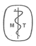

THE CIRCUMCISION REFERENCE LIBRARY
 Uncircumcision
Not even the most vigorous opponent of routine circumcision in the male have proposed the restoration of the prepuce, once it has been removed. Attempts at uncircumcision have been made, nevertheless, since at least the second century before Christ, although not on hygienic or medical grounds. Uncircumcision has appeared as a result of social and political pressures on the Jews, the most widespread group practicing ritual circumcision.
The rapid spread of Greek culture and customs following the conquests of Alexander did not leave the Jewish nation in Palestine untouched. The Hellenized Jews adopted not only the Greek style of dress but also their methods of training the young and their interest in athletic games. Public nakedness became a commonplace throughout Judea; in Jerusalem itself baths and gymnasia were erected within sight of the Holy Temple, (to the horror of the followers of the law of Moses). The Hellenizers, in their desire to destroy all evidence of their barbarian origin (in the Greek sense of the word), tried to destroy the evidence of the Covenant of Abraham. Circumcision was not then standardized: the Oral tradition was ambitious, and frequently a large fragment of the prepuce was left behind. The Hellenizers pulled this fragment forward, manually, stretched it, and even applied blistering agents thereto, in order to make it cover the glans. Josephus says:
". . . they hid the circumcision of their genitals so that even when naked they might appear as Greeks." 1
I Maccabees 1:11, on which Josephus elaborated, merely says, "they made themselves uncircumcised." Dr. Solomon Zeitlin, the noted Jewish historian, in a comment on another such statement by Josephus says:
"they hid the fact of circumcision by drawing forward the prepuce so that they resembled the Hellenes." 2
The practice became widespread enough to be noted by the author of the apocryphal Book of Jubilees, in 15: 26-27:
"God's anger will be kindled against the children of the covenant if they make the members of their bodies appear like those of the Gentiles, and they will be expelled and exterminated from the earth."
One of the causes given by the later Rabbis for the destruction of the Temple is the practice of uncircumcision:
" 'The hallowed flesh is passed from thee'--that is, they attempted to hide their circumcisions." 3
Following the successful revolt of the Jews against Antiochus Epiphanes and the establishment of the Hasmonean Dynasty in 141 B.C., the practice of uncircumcision disappeared in Judea. The Romans, who soon became the overlords of the province, were initially as unconcerned with the Jewish religion as with that of any other subject people. They regarded circumcision as an interesting and amusing custom, less harmful than the self-castration of the Cybelean priests. Not quite three centuries later, however, circumcision was prohibited by the Emperor Hadrian, and uncircumcision again became practiced, this time, encouraged by the growing sect of Christians.
The stiff-necked opposition of the Jews to the introduction of the Roman eagles and the altars to the God-Emperors in their holy places, their Messianic ideas, the repeated uprisings of the Zealots, all eventually culminated in the destruction of the Temple in 70 A.D. and the dispersion of the Jews. As in the Greek period, there was a strong tendency to assimilation on the part of the exiled Jews. They wanted to take advantage of the luxuries of Rome and they also wanted to avoid the payment of the onerous "Fiscus Judaicus," a tax levied against every Jewish male. Some devices were already at hand and others could be converted to hide the circumcised penis. Comic actors wore a special sheath over the penis even in the bath, "to protect the voice," it was believed; Jews began to use the same sheath. They also invented the "Pondus Judaeus," a bronze sheath worn so as to pull on the skin of the preputial fragment to make it recover the glans. 4
The assimilationists were not the only group of Jews who found circumcision burdensome. The Apostle Peter (decried circumcision as "a yoke upon the neck of the disciples, which neither our fathers nor we were able to bear." The insistence of some early Christians on "circumcision after the manner of Moses" (Acts 15:1) was a stumbling block to the conversion of the Gentiles. The persecution of the Jews who accepted Jesus as the Messiah by their more orthodox coreligionists led finally to the great schism, when the Christian Jews finally turned to the Gentile world for their proselytes. In the process, circumcision, as well as the distinction between clean and unclean foods, and then the rest of the Law went by the board. It is likely that some early Christians attempted to do away with the signs of the circumcision, as witness the Apostle Paul, in I Corinthinians 7: 18:
"Is any called being circumcised? Let him not be uncircumcised. Is any called being uncircumcised, let him not be circumcised."
This passage has been sometimes construed as being purely allegorical, but the fact remains that the question of circumcision for converts concerned a physical process, not a spiritual one, as the history of the Early Church shows. 5
Against both the assimilationists and the schismatics a reaction developed, especially after the loss of Jerusalem as the Holy City and the growth of the Rabbinic academies. The Tannaim, the Rabbis who first committed the Oral Tradition to writing as the Mishnah, set themselves the task of rebuilding a religious base for Judaism by making the Law "a fence around Israel." About 140 A.D., they finally standardized the technique of circumcision, effectively eliminating the previously used methods of uncircumcision. In Shabbat 19: 6, we read:
"These shreds (of the foreskin) include flesh that covers the greater part of the corona . . .: if he waxes fat (and the corona is covered anew) . . . or if one is circumcised without having the inner lining torn, it is as though he had not been circumcised."
To obviate the leaving of excessive preputial tissue, the per'iah was instituted. After the excision of the foreskin the mohel was instructed to seize the inner lining of the prepuce still covering the glans and with thumbnail and index finger of each hand to tear it so the he can roll it fully back over the glans and completely expose the latter.
There is no evidence that any other method was used since that standardization of the operation. The Inquisitor was in error when he said
"It is to be noted here that the Jews operate differently on their own children and on Christians, children or adults. To circumcise Christians, adults or minors, they do not cut the prepuce all around, as they do to their own children born in Judaism, but merely make semi-circular resection." 6
From then until the very recent past there is no evidence of attempts at uncircumcision amongst the Jews. The plight of the Jews under the Hitler terrer, however, made uncircumcision no longer a question of social conformity but a matter of life and death. Escape from the Ghettos set up by the Germans in Poland was difficult but possible. On the "Aryan side," life for the Jews remained dangerous. No matter how "good" the visage nor how well-forged the Kennkarte, (identification documents), the male Jew carried with him incontrovertible proof of his origin.
The blackmailers and the extortionists know as schmaltzovniks (from the Polish word "szmalec," meaning "fat") used the circumcision as the criterion of Jewishness. Bernard Goldstein, a Bundist leader who lived on the "Aryan side," describes their activities vividly:
"These scum would approach their victims with the words, 'Hand over your fat.' They were a terrible plague upon the Jews who lived on the Aryan side. In addition to the Gestapo, SS men, and others who hunted them relentlessly, the Jews lived in constant danger from these dregs of Polish morality, who made a business of Jewish lives. Hundreds were engaged in this hateful occupation--searching out the unfortunates who now lived under the protection of Gentiles . . . Jews who had nothing and were not profitable were handed over to the Nazis. Others had to pay monthly blackmail. When they finally had nothing left for the blood tax, they were handed over to their fate . . . They operated in gangs . . . They would pull their victim into a doorway or alley and rip open his trousers, looking for the fateful sign . . . 7
Even Christians became their victims. 8 Respectable Poles, when asked to expose themselves, tried to give the hooliganswho surrounded them money to avoid the disgrace; such actions merely incited their tormentors further; they tore open their trousers and finding an intact prepuce, beat up their hapless prey in their chagrin. Those Catholics who took Jewish children into convents and orphan asylums also feared the schmaltzovniks.
"They sent back Dr. E. Ringelblum's son (who had a good visage--i.e., he didn't look Jewish) because they feared to keep circumcised boys." 9
After the mass deportations from the Ghettos to extermination, the Gestapo continued its job of rooting out Jews in the towns and villages where they might be hiding.
"One day the Gestapo raided the villa. Tolla and her husbanh were discovered: their appearance and their documents were of no avail. The beasts examined her husband physically, discovered he was a Jew, and immediately shot both of them." 10
Through illegal sources, Jews could sometimes obtain documents, stating that circumcision had been performed because of phimosis resulting from a chancre or infection secondary to venereal disease. Obviously such documents were valueless for children, as well as repugnant to many adults. Furthermore, although such papers might convince the laymen, they were regarded with great skepticism by the German doctors. The latter prided themselves on their skin in distingiushing between circumcisions performed in infancy (and hence ritual) and those done in adult life. 11
Ingenious surgeons devised methods of reforming the prepuce to answer demands for such operations.
"There was at least one doctor who, for tremendous sums, performed plastic operations to restore the appearance of a foreskin. The operation was extremely dangerous, but some were desperate enough to try it." 12
The famous actor, Jonas Turkow, describes what happened to his nephew: Before placing the boy with Christians, his sister-in-law had to arrange for an operation to wipe out the sign of his Jewish origin.
"She had already come to an agreement with a certain Dr. G----------, former major in the Polish Army. I knew this individual well from the Warsaw Ghetto . . . He had now become a go-between for the surgeons who dd these operations and the Jews who wanted the operations. Tens of thousands of Jews had already had these operations. Several doctors on the Aryan side made a good living from this ...Major G--------- asked for this operation large sums of money which he split with the surgeon . . . The fee had to paid in advance . . . A few days after the operation, it appeared that it had been unsuccessful . . ." 13
The same sum was demanded for another operation. It was done by another doctor,
". . . in a meadow because the doctor didn't want to work in his house. The second operation was also unsuccessful. Yurek became very sick after this operation . . ."
The earliest description of uncircumcision is given by Celsus in Book VII, Chapter 25, of De Medicina:
"The prepuce is to be raised from the underlying penis around the circumference of the glans by means of a scapel. This is not very painful, or once margin has been freed it can be stripped up by hand as far back as the pubes, nor in so doing is there any bleeding. The prepuce thus freed is again stretched forward beyond the glans; next cold water applications are freely used, and a plaster is applied around to repress severe inflammation. And for the following days the patient is to fast until nearly overcome by hunder lest satiety excite that part. When the inflammation has ceased the penis should be bandaged from the pubes to the corona; over the glans the plaster is applied with the other end of the probe. This is done in order that the proximal part may aglutinate whilst the distal part heals without adhering." 14
This operation was not only very painful and exposed the patient to danger because of the rules of anesthesia and asepsis, but it failed in a large number of cases.
As scarring took place, the skin covering the glans retracted slowly and finally the circumcision reappeared. 15
At a later period, Paulus Aeginate, in Chapter 53 of his Surgery, say of uncircumcision:
"Two kinds of operation have been described. Sometimes one cuts the skin circularly at the proxima edge of the organ, and, after separating the edges, the lower part is pulled forward to cover the glans. Other times one dissects with a bistoury the area just proximal to the corona, then one draws it distally, interposes a small piece of linen so that no adhesions form, and then covers the entire area with fine linen. Antyllus prefers this method and has advocated it for a long time . . ." 16
In modern times, the only published description of such an operation is a single case report from the 1890's. Because of a misunderstanding the prepuce was removed. The violent objections of the patient led the surgeon to replace it immediately, suturing it to the original site. Cicatricial contraction followed, but the cosmetic effect was good. 17
A search of the literature since 1945, particularly the Polish, has failed to find description of the techniques used by the Polish surgeons. From information from lay sources I have been able to learn that three methods were used, depending on the age of the patient, the mobility of the post-coronal skin, and the skill of the surgeon.
The first, and crudest, technique was to pull forward the skin from behind the corona, scarify the edges roughly, and suture the scarified edges together with non-absorbable suture to create an artificial phimosis. Post-operative swelling was common and infection frequent. If infection lead to scarring, the operation was successful; if however, as often happened, the sutures were extruded, the skin promptly retracted from the covered glans.
The second method was a variation of that described by Celsus. After using local anesthetic solution sufficient to distend the loose skin behind the glans, the surgeon made a circular incision. By blunt dissection he separated the anterior and posterior portions from the underlying tissue. He then pulled forward the posterior part over the head of the glans. With absorbable suture the anterior portion was now fixed to the adjacent raw undersurface of the posterior (but now, upper) part. The tip of the remainder of the posterior portion, which now covered the glans, was narrowed by a circular suture so that retraction did not take place. The whole penis was then wrapped in layers of gauze. If infection did not supervene, this operation was quite satisfactory from a cosmetic point of view. If there was inflammation not responding to simple measures, multiple incision were made, allowing the release of accumulated serum, blood, or pus; the resultant scars sometimes caused irregular retraction of the new prepuce but seldom to the degree that it could be said that the patient had been ritually circumcised.
The third method was very elaborate (and correspondingly expensive, although no more effective. Two laymen, with an understandable passion for anonymity, on whom this type of operation was done (by the same doctor) have described the technique to the best of their ability: The entire operation was done under local anesthesia. The preputial area was infiltrated. A circular incision was made and the edges of the wound separated. Bleeding was controlled by pressure with a "rag" (gauze sponge?) by the patient. An area over the iliac crest was infiltrated and a long oblong band excised. This strip of tissue was placed in a glass of solution (type?) while the surgeon covered the wound at the iliac crest with greased (petrolatum?) gauze. He then took the strip of skin and sutured the long edges to the anterior and posterior edges of the penile incision; the narrow edges of the strip were sutured together at the inferior surface of the penis at the frenulum. The anterior line was covered with oil (?). The anterior line of the bulging skin graft was then pushed back so that it became the inner surface of an artificial prepuce. The posterior line of incision was also covered with oil and a firm circular bandange applied. The patient was instructed to keep the iliac crest area dry for three days then wash it daily. The bandage over the penile wound was not to be touched for three days, then carefully unwound and replaced daily until all redness had disappeared at the site of the wound. A foul discharge occurred, both patients said, from the inside of the new prepuce, but they were afraid to push it back and wash the area lest they undo the operation. The wounds healed completely ("but with rough edges") in about two weeks.
No better final comment can be made than that of Doctor Joseph Tenebaum:
"Circumcision certainly proved a boon for the Nazis. Jews could dye their hair, assume an Aryan flair and learn to chant Catholic hymns, but they could not hide the mark of the covenant . . . being a surgeon myself, my professional curiousity made me interview dozens of doctors and examine the end results of these operations. The latter were either unsatisfactory or mutilating. One of the physicians, who himself underwent several plastic operations to undo the irreparable, said to me in great bitterness: "Jews have had all kinds of international conferences, from Zionist congresses to Esperanto conventions, but though Jewish doctors, starting with Professor Israel in Berlin and Zuckerkandel in Vienna, were pioneers in the speciality of urology, not one Urological Congress was called for the purpose of standardizing the circumcision repair technique.' He now had an obsession to call a congress of Jewish urologists for the purpose of devising a proper operative procedure to safeguard the children of Israel from the circumcision hounds of a future Hitler." 18